Instalar dicho certificado en su servidor Web y habilitar tráfico mediante HTTPS
Vamos primeramente a exportar el certificado al formato PFX desde windows server.
Abriremos nuestro mmc.exe procederemos a seguir los pasos de las imagenes mostradas.
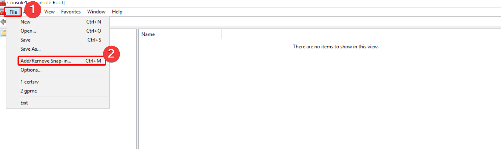
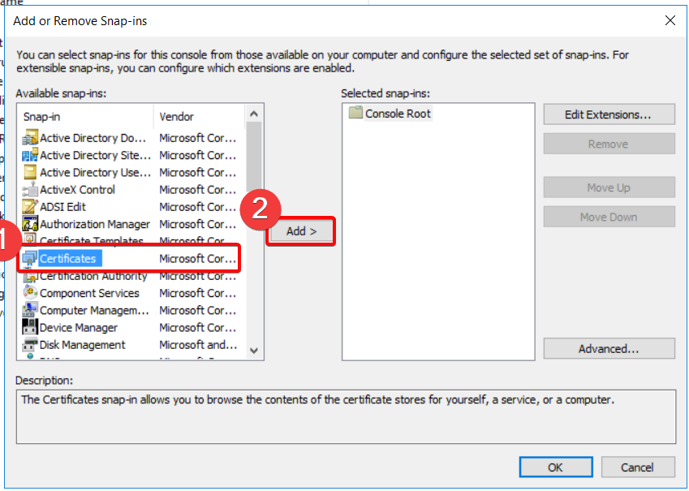
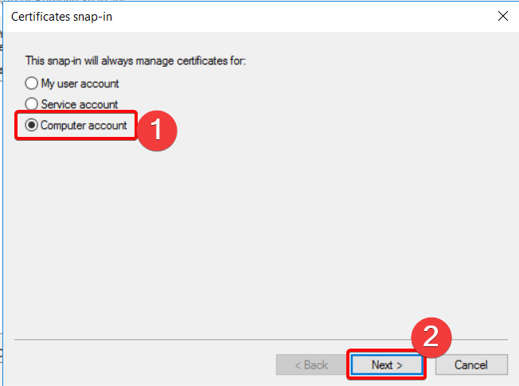
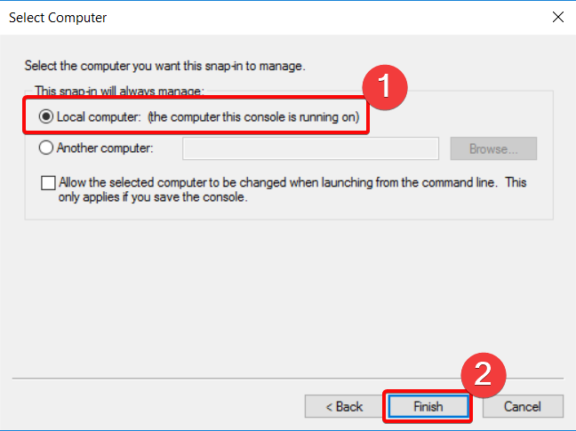
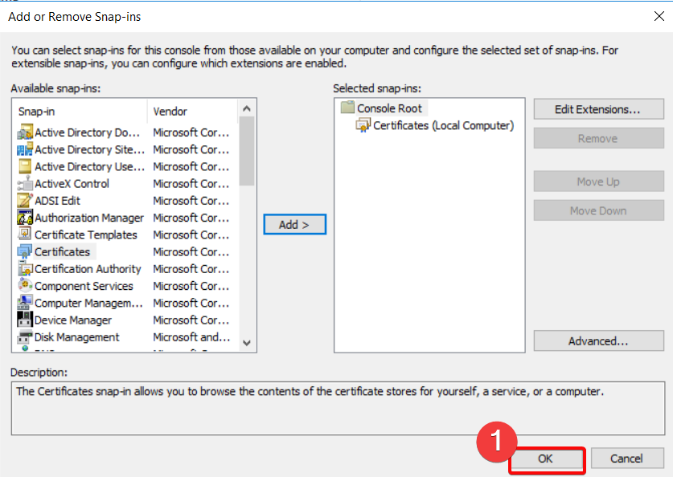
Ya teniendo los resultados de los certificados, accederemos a los certificados personales que hemos generado.
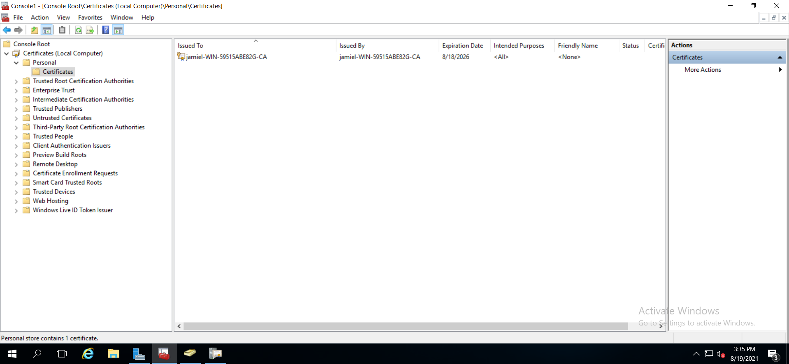
Ya estando en el path del certificado, daremos click derecho en la cert > All Task > Export
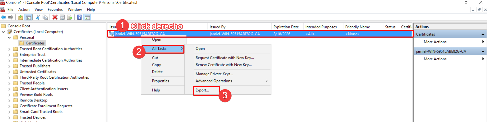
Hecho esto se nos abrirá el wizarrd para exportar los certificados, rápidamente daremos click en next.
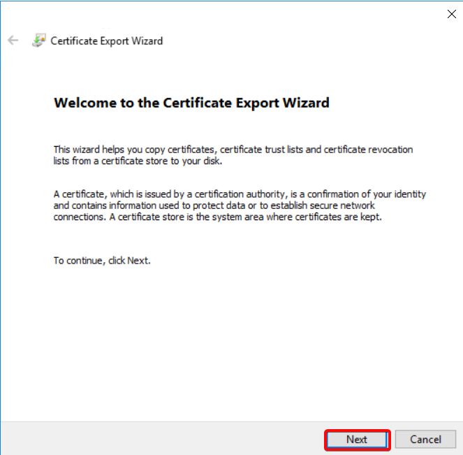
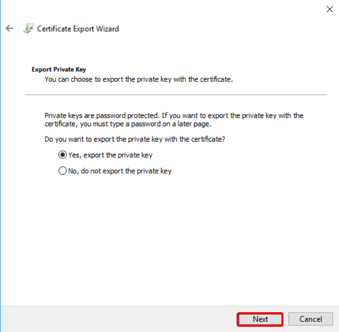
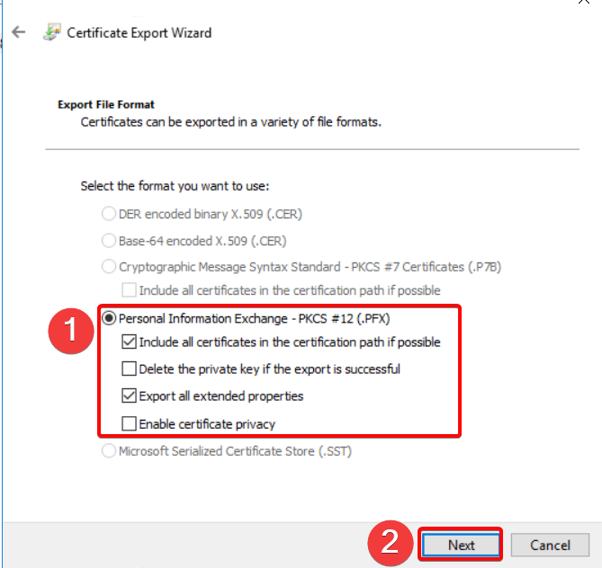
En esta sección tendremos que tener pendiente, la password que asignemos ya que es la que utilizaremos más adelante con openssl.
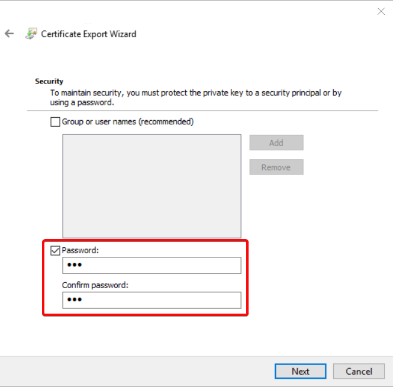
Ahora como último paso vamos a seleccionar el fichero donde queremos que se guarde el archivo.
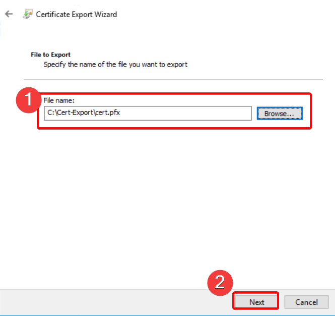
Nos muestra los settings que hemos configurado para la exportación, si vemos que todo se encuentra bien damos click en Finish.
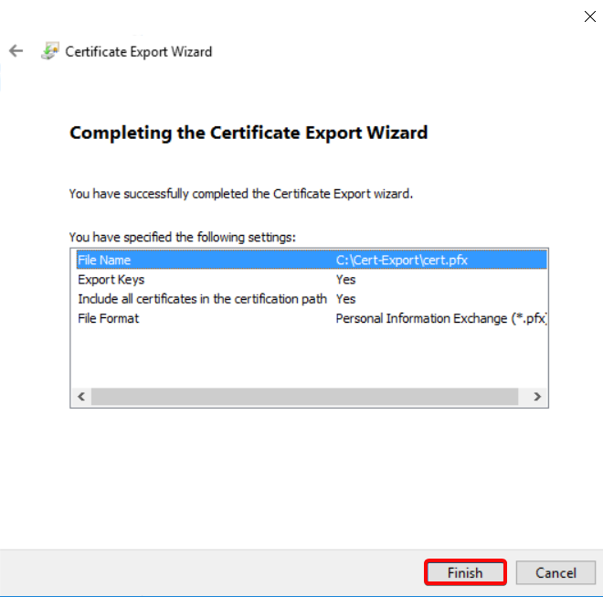
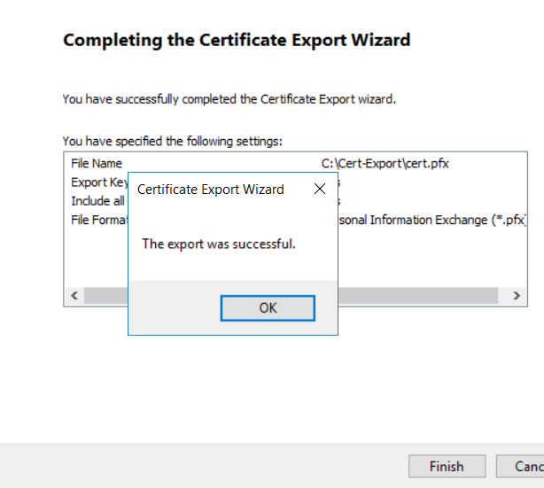
Pasar la cert a Linux Apache
Ahora vamos a buscar la manera de pasar el certificado a nuestro servidor web linux, para luego proceder con la instalación del Certificado en nuestro serv web.
El método que hemos utilizado es crear una carpeta compartida que nos permita obtenter el certificado en nuestro server web.
En nuestro server manager daremos doble click en File an Storage Services, entrando en esta sección hacemos click en shares, estando en shares daremos click derecho, y luego daremos click en New share, haremos el setup que es muy fácil de hacer.
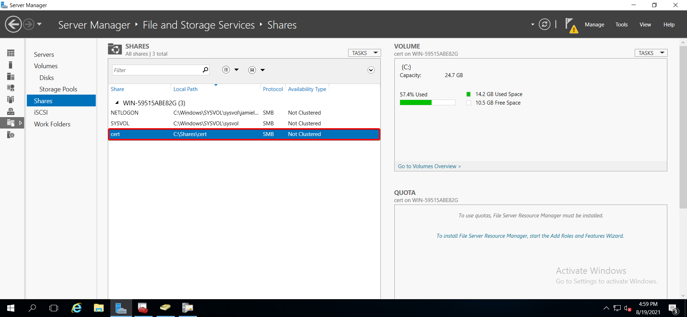
Creado la carpeta compartida, vamos a pasar la cert que creamos anteriormente y lo ponemos en nuestra carperta compartida.
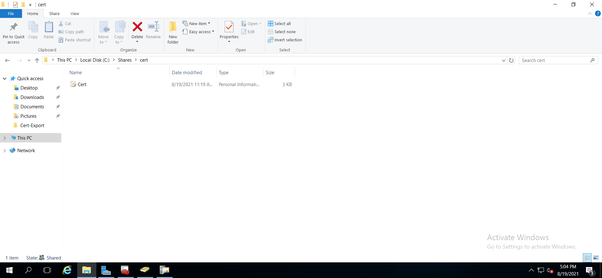
Conectar linux a carpeta compartida
En nuestro caso estamos usando Centos 7 como servidor web, para poder acceder a la carpeta compartida tendremos que descargar un paquete llamado smbclient, esto lo haremos con el siguiente comando.
yum install smbclient -y
Ya instalado este paquete nos podemos conectar a la carpeta de la siguiente manera.
smbclient -U {user} {PATH} # smbclient -U Administrator //10.0.0.90/cert
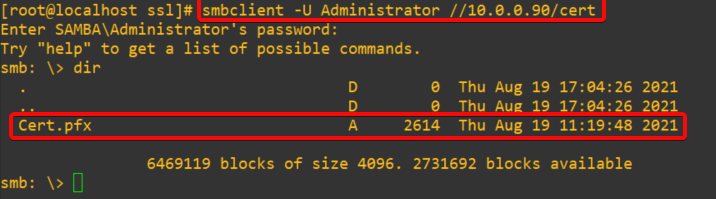
Ya confirmamos que podemos acceder ahora salimos de ese modo y vamos a copiar el certificado directamente a nuestro linux.
smbget -R -U {USER} smb:{PATH}
# EJEMPLO
# smbget -R -U administrator smb://10.0.0.90/cert/
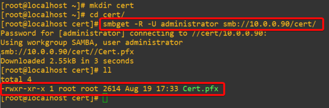
Generar clacves SSL
Obtenido el file pfx, vamos a proceder a genernar los archivos necesearios para que nuestra web corra correctamente por medio de https.
1.Exportar la llave privada del fichero pfx.
openssl pkcs12 -in fichero_exportado_de_iis.pfx -nocerts -out ca.pem
2.Exportar el certificado del fichero pfx
openssl pkcs12 -in fichero_exportado_de_iis.pfx -clcerts -nokeys -out cert.pem
3.Eliminar la clave que se adjunta a la clave privada, para que Apache no pregunte por la misma cuando arranca.
openssl rsa -in ca.pem -out private.key
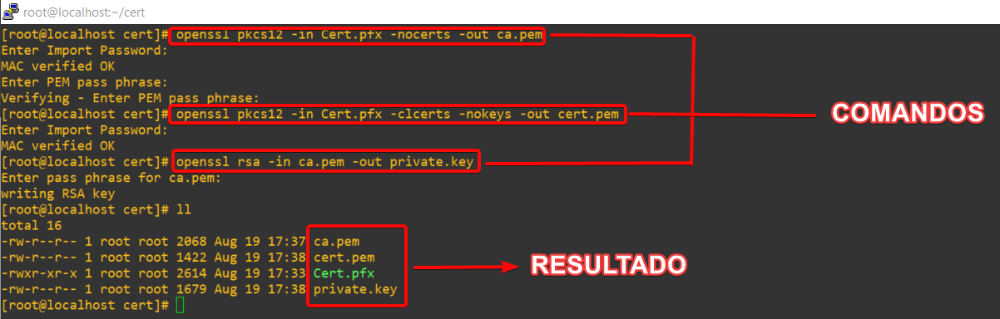
Obtenido estos archivos ahora nos toca agregarlos a nuestro virtualhost de la siguiente manera, incluido a esto pondremos una redirección obligatoria de HTTP --> HTTPS.
<VirtualHost *:80>
ServerName 10.0.0.50 # aquí pueden poner su FQDN o la ip de su serv web
ErrorLog /var/www/jamiel/error.log
CustomLog /var/www/jamiel/access.log combined
Redirect permanent / https://10.0.0.50/ # Esta linea es la que forza la redirección
</Virtualhost>
<VirtualHost _default_:443>
SSLEngine On
DocumentRoot /var/www/jamiel/public_html
ServerName 10.0.0.50
# RUTA DE LOS FILES GENERADOS ANTERIORMENTE
SSLCertificateKeyFile /etc/ssl/localcerts/private.key
SSLCertificateFile /etc/ssl/localcerts/cert.pem
SSLCertificateChainFile /etc/ssl/localcerts/ca.pem
# Parámetros adicionales para lograr la conexión https
SSLVerifyDepth 5
SSLVerifyClient none
</VirtualHost>
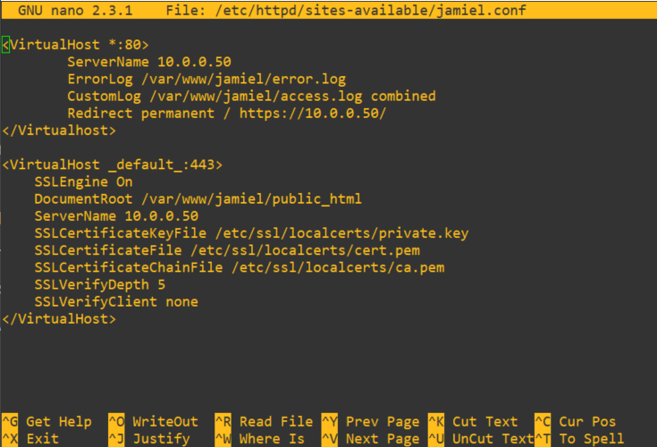
Verificando configuración
En este momento vamos reiniciar el servicio de Apache con el comando.
systemctl restart httpd
Este comando es más que suficiente para reiniciar el servicio, si todo anta bien el comando se debería ejecutar sin ningún output y una vez reiniciado podremos acceder a la web para ver el resultado.
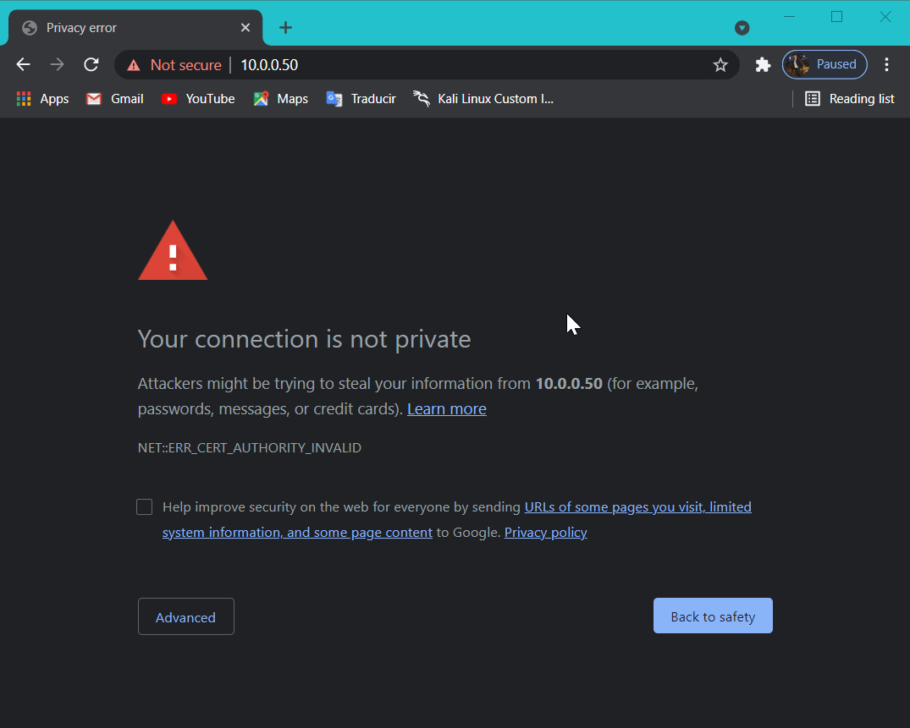
Vemos como con solo tipiar la ip de nuestro servidor nos hace la redirección a HTTPS, sin ningún problema. Nuestra web es vista como no segura debido a que el certificado es autofirmado, pero de igual forma el contenido viaja en https.
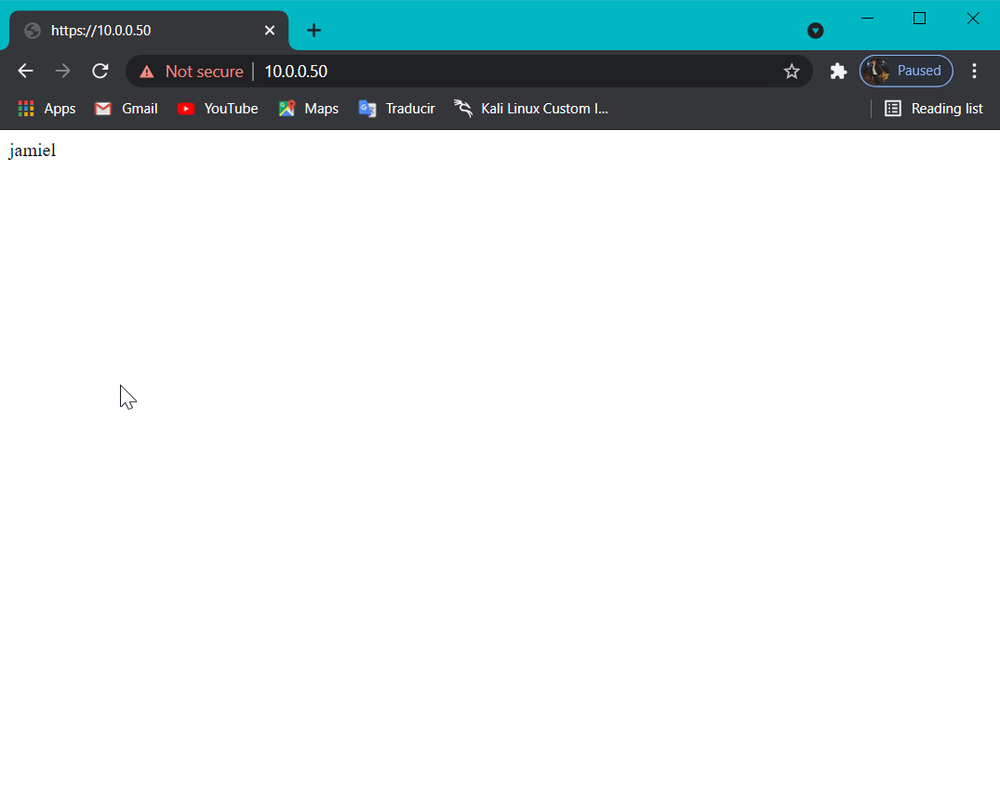